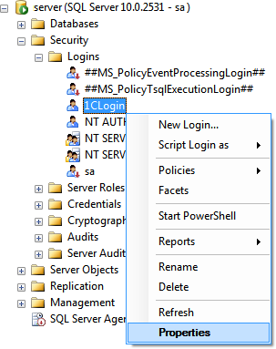
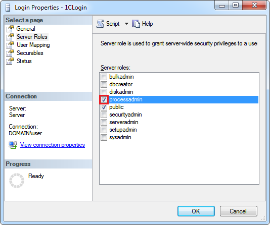

Если в качестве СУБД исследуемой информационной базы используется Microsoft SQL Server, тогда необходимо выполнение следующего требования. Используемый сервером 1С:Предприятия, исследуемой информационной базы, логин базы данных, должен быть членом фиксированной серверной роли "processadmin", для возможности получения информации о блокировках.
1. Откройте SQL Server Management Studio и подключитесь к серверу, на котором находится исследуемая база данных.
2. Перейдите в раздел "<Instance>\Security\Logins" и откройте свойства логина, используемого сервером 1С:Предприятия, исследуемой базы, для подключения к СУБД:

3. Откройте страницу "Server Roles" и установите флажок напротив роли "processadmin" и нажмите "ОК":
